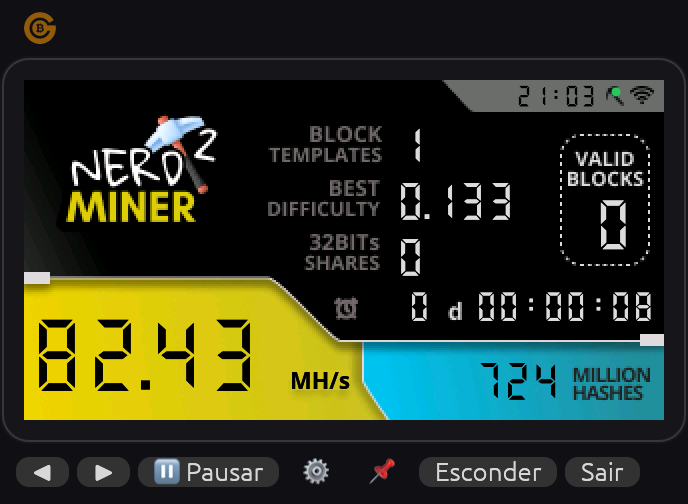
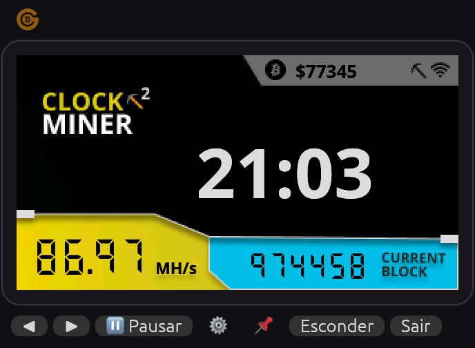
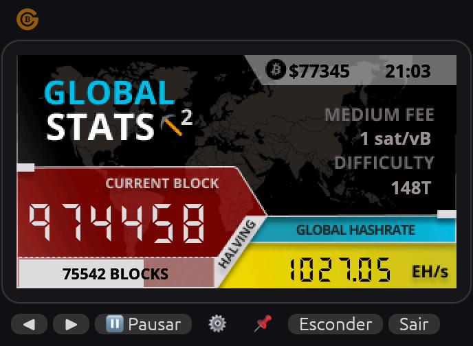
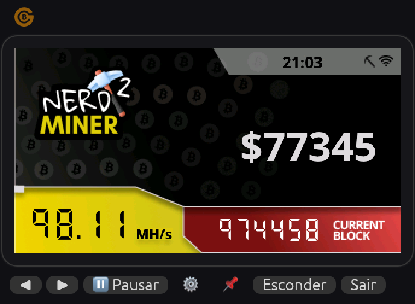
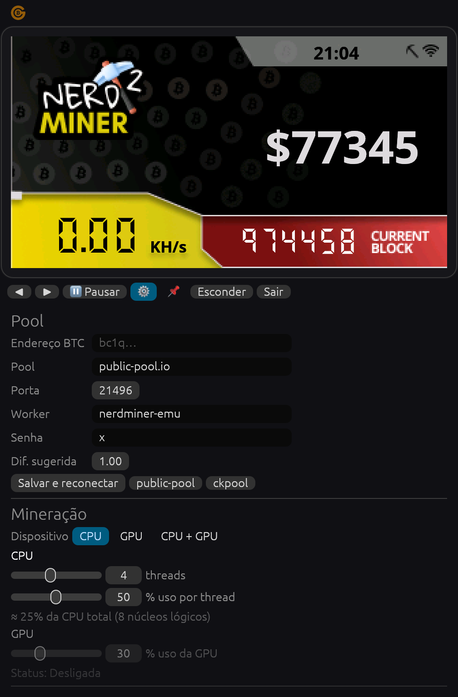

The NerdMiner v2 lottery miner, pixel for pixel, as a tiny widget on your desktop. Solo-mine Bitcoin with your CPU, your GPU or both, set exactly how much they can use, and hide it in the tray. O minerador-loteria NerdMiner v2, pixel por pixel, como um widget na sua área de trabalho. Minere Bitcoin solo com CPU, GPU ou os dois, defina quanto cada um pode usar e esconda na bandeja.
Same bitmaps, same fonts, same coordinates as the NerdMiner v2 firmware. Click the screen to cycle through it, just like the button on the real board. Os mesmos bitmaps, fontes e coordenadas do firmware NerdMiner v2. Clique na tela para alternar, como no botão da placa de verdade.

Hashrate, shares, best difficulty, valid blocks and pool status.Hashrate, shares, melhor dificuldade, blocos válidos e status da pool.

Local time, block height and BTC price at a glance.Hora local, altura do bloco e preço do BTC.

Network hashrate, difficulty, fees and blocks to the halving.Hashrate da rede, dificuldade, taxas e blocos até o halving.

Big BTC price ticker with the current block.Preço do BTC em destaque com o bloco atual.
About every ten minutes, a new Bitcoin block is created. Whoever creates it collects the block reward: 3.125 BTC plus all the transaction fees in that block.
To create a block, a miner must find a block header whose double SHA-256 hash is below a target set by the network. There is no shortcut and no skill: you change a number (the nonce), hash, check, and repeat. Every hash is an independent lottery ticket.
Big mining farms buy billions of tickets per second and split the prize inside a pool. Lottery mining is the opposite: you play solo, with a tiny machine. Your odds are astronomically small, but if your ticket ever wins, the whole reward goes straight to your Bitcoin address. Solo miners with small devices have won full blocks more than once.
It is not an investment. It's a hobby: you learn how Bitcoin works by watching it happen, and you hold a real ticket to a real draw every ten minutes.
Mais ou menos a cada dez minutos nasce um novo bloco de Bitcoin. Quem cria esse bloco leva a recompensa: 3,125 BTC mais todas as taxas das transações dentro dele.
Para criar um bloco, o minerador precisa achar um cabeçalho cujo hash SHA-256 duplo fique abaixo de um alvo definido pela rede. Não existe atalho nem habilidade: você muda um número (o nonce), calcula o hash, confere e repete. Cada hash é um bilhete de loteria independente.
As grandes fazendas de mineração compram bilhões de bilhetes por segundo e dividem o prêmio numa pool. A mineração-loteria é o contrário: você joga sozinho (solo), com uma máquina pequena. A chance é astronomicamente baixa, mas se o seu bilhete ganhar, a recompensa inteira vai direto para o seu endereço Bitcoin. Mineradores solo com aparelhos pequenos já ganharam blocos inteiros mais de uma vez.
Não é investimento. É hobby: você aprende como o Bitcoin funciona vendo acontecer, e tem um bilhete de verdade num sorteio de verdade a cada dez minutos.
per CPU thread on an Apple M1, about 130× a real NerdMiner board.por thread de CPU num Apple M1, cerca de 130× uma placa NerdMiner real.
sent to anyone else. No account, no private key, no custody: the template pays your address directly.enviado a mais ninguém. Sem conta, sem chave privada, sem custódia: o bloco paga o seu endereço direto.
Watch your best difficulty climb, learn Stratum and SHA-256d, and keep a ticket in every draw.Veja sua melhor dificuldade subir, aprenda Stratum e SHA-256d e tenha um bilhete em todo sorteio.
Pick the device. CPU uses SHA instructions (ARMv8 / SHA-NI); GPU runs a WGSL compute shader on Metal, Vulkan or DX12.Escolha o dispositivo. A CPU usa instruções SHA (ARMv8 / SHA-NI); a GPU roda um shader WGSL em Metal, Vulkan ou DX12.
Threads and % per thread for the CPU, % for the GPU. Change them live, without restarting. Your laptop stays quiet.Threads e % por thread na CPU, % na GPU. Mude ao vivo, sem reiniciar. O notebook continua silencioso.
Borderless widget, always-on-top option, zoom 1×–2.5×. Hides to the tray, which works as a mini dashboard with network occupancy and the fee to pay now.Widget sem bordas, opção sempre-no-topo, zoom de 1× a 2,5×. Esconde na bandeja, que vira um mini painel com a ocupação da rede e a taxa para pagar agora.
Stratum v1 with suggested difficulty. Presets for public-pool.io and solo.ckpool.org, or type your own pool.Stratum v1 com dificuldade sugerida. Atalhos para public-pool.io e solo.ckpool.org, ou use a sua própria pool.
Price, block height, global hashrate, fees and halving countdown from mempool.space.Preço, altura do bloco, hashrate global, taxas e contagem para o halving, via mempool.space.
Native Rust, single binary, no runtime. Memory stays flat over days of mining.Rust nativo, binário único, sem runtime. A memória fica estável depois de dias minerando.
| Selection (MacBook Air M1)Seleção (MacBook Air M1) | Process CPUCPU do processo | % of machine% da máquina | MemoryMemória |
|---|---|---|---|
| CPU, 4 threads @ 50% (default)CPU, 4 threads @ 50% (padrão) | ~180% | ~22% | ~40 MB |
| CPU, 4 threads @ 100% | ~393% | ~49% | ~41 MB |
| CPU, 1 thread @ 10% | ~9% | ~1% | ~40 MB |
| GPU only @ 30%Só GPU @ 30% | ~2% | <1% | ~41 MB |
| CPU 4 @ 50% + GPU @ 30% | ~179% | ~22% | ~43 MB |
Inspired by iStat Menus and mempool.space: the tray icon became a tiny dashboard. Mining status, how busy the Bitcoin network is and the fee you should pay right now, without opening anything. Inspirado no iStat Menus e no mempool.space: o ícone da bandeja virou um mini painel. Status da mineração, o quanto a rede Bitcoin está ocupada e a taxa que você deve pagar agora, sem abrir nada.
| OccupancyOcupação | Paying queueFila pagante | RecommendationRecomendação |
|---|---|---|
| 🟢 FreeLivre | ≤ 1 blockbloco | "No rush" fee, paying more doesn't helpTaxa "sem pressa": pagar mais não adianta |
| 🟡 ModerateModerada | 1–6 blocksblocos | ~30 min feeTaxa de ~30 min |
| 🟠 CongestedCongestionada | 6–36 blocksblocos | ~1 h fee; low fees may take hoursTaxa de ~1 h; taxa baixa pode demorar horas |
| 🔴 SevereMuito congestionada | > 36 blocksblocos | Send only if urgentEnvie só se for urgente |
Live: network rows use mempool.space data right now, with the app's own logic. Mining rows are an example. Shown in Portuguese here; the app follows your system language (English or Portuguese). Ao vivo: as linhas da rede usam os dados do mempool.space agora, com a mesma lógica do app. As linhas de mineração são um exemplo.
Free and open source (MIT). Latest release: Livre e open source (MIT). Versão mais recente: v0.1.0
Prefer to build from source? You only need stable Rust: Prefere compilar do código-fonte? Só precisa do Rust estável:
git clone https://github.com/tnarnold/nerdminer-emu cd nerdminer-emu cargo run --release
macOS: open the .dmg and drag the app to Applications. The app isn't notarized yet, so the first time: right-click → Open → Open.
Windows: extract the zip and run nerdminer-emu.exe. If SmartScreen appears: More info → Run anyway.
Linux: extract and run ./nerdminer-emu. On GNOME, enable the AppIndicator extension to see the tray icon.
macOS: abra o .dmg e arraste o app para Aplicativos. O app ainda não é notarizado, então na primeira vez: clique com o botão direito → Abrir → Abrir.
Windows: extraia o zip e rode nerdminer-emu.exe. Se o SmartScreen aparecer: Mais informações → Executar assim mesmo.
Linux: extraia e rode ./nerdminer-emu. No GNOME, ative a extensão AppIndicator para ver o ícone na bandeja.
On first launch the ⚙ panel opens. Paste your own Bitcoin address (from any wallet: bc1…, 3… or 1…) and click Salvar e reconectar (save and reconnect). That address is where the prize goes.
Na primeira execução o painel ⚙ abre sozinho. Cole o seu endereço Bitcoin (de qualquer carteira: bc1…, 3… ou 1…) e clique em Salvar e reconectar. É para esse endereço que vai o prêmio.

Under Mineração pick the Dispositivo (device). Set CPU threads and % per thread, and the GPU %. Start low (the default is 4 threads @ 50%) and raise it while watching temperature and fan noise.
Em Mineração, escolha o Dispositivo. Ajuste threads e % por thread da CPU e a % da GPU. Comece baixo (o padrão é 4 threads @ 50%) e aumente de olho na temperatura e no barulho da ventoinha.
On the Miner screen, the dot next to the Wi-Fi icon turns green when the pool is connected and the hashrate starts counting. Then hide it to the tray and forget about it. Follow your stats at web.public-pool.io using your address.
Na tela Miner, a bolinha ao lado do ícone de Wi-Fi fica verde quando a pool conecta e o hashrate começa a contar. Aí é só esconder na bandeja e esquecer. Acompanhe pelo web.public-pool.io usando seu endereço.
Red dot? It's almost always the firewall. Mining is an outbound connection, so you don't need UPnP or port forwarding. But some corporate, school or ISP networks block the pool ports: 21496 (public-pool.io) and 3333 (solo.ckpool.org). Test with nc -vz public-pool.io 21496; if it times out, allow that outbound TCP port or try another network.
Bolinha vermelha? Quase sempre é firewall. Minerar é uma conexão de saída, então você não precisa de UPnP nem de redirecionamento de portas. Mas algumas redes de empresa, escola ou provedor bloqueiam as portas das pools: 21496 (public-pool.io) e 3333 (solo.ckpool.org). Teste com nc -vz public-pool.io 21496; se der timeout, libere essa porta TCP de saída ou tente outra rede.
Almost certainly not. Solo mining with a computer is a lottery with very long odds; the electricity you spend will likely be worth more than what you "earn" on average. Do it for fun and learning. If you hit a block, celebrate.
Quase certamente não. Minerar solo com um computador é uma loteria com chances muito baixas; a energia gasta provavelmente vale mais do que o que você "ganha" na média. Faça por diversão e aprendizado. Se achar um bloco, comemore.
No. You only give the pool a public receiving address. Never paste a private key or seed phrase anywhere in this app. Solo pools have no sign-up.
Não. Você só informa à pool um endereço público de recebimento. Nunca cole chave privada ou frase-semente no app. Pools solo não têm cadastro.
A share is a hash that beats an easy target set by the pool. It proves your miner is working but pays nothing in solo mode. Best difficulty is how close your best hash ever got; a block needs a difficulty equal to the network's (shown in the ticker above).
Share é um hash que bate um alvo fácil definido pela pool. Prova que o minerador está trabalhando, mas no modo solo não paga nada. Best difficulty é o quão perto seu melhor hash já chegou; um bloco precisa de uma dificuldade igual à da rede (mostrada lá em cima).
public-pool.io:21496 (default, no fee) or solo.ckpool.org:3333 (keeps a small fee if you win). Both are solo: if you find a block, the reward goes to your address. You can also point it at your own pool.
public-pool.io:21496 (padrão, sem taxa) ou solo.ckpool.org:3333 (fica com uma pequena taxa se você ganhar). As duas são solo: se você achar um bloco, a recompensa vai para o seu endereço. Também dá para usar a sua própria pool.
Yes, within reason. The usage limits are real duty cycles, so the CPU/GPU rests between bursts. At 100% on many threads your machine will run hot and loud, just like any heavy workload. Laptops on battery: keep it low or paused.
Sim, com bom senso. Os limites são ciclos de trabalho reais: a CPU/GPU descansa entre as rajadas. Com 100% em muitas threads a máquina vai esquentar e fazer barulho, como em qualquer carga pesada. Notebook na bateria: mantenha baixo ou pausado.
No. It's an independent desktop emulator that reuses the interface of NerdMiner v2 by BitMaker (MIT license). If you enjoy it, consider getting a real NerdMiner board: it's a great way to support the original project.
Não. É um emulador de desktop independente que reutiliza a interface do NerdMiner v2 da BitMaker (licença MIT). Se gostar, considere comprar uma placa NerdMiner de verdade: é um ótimo jeito de apoiar o projeto original.